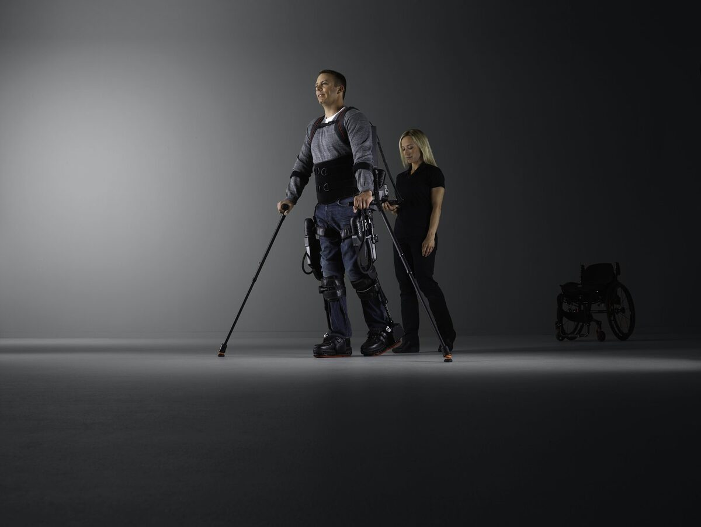

At the SCVTBIC2015 I was lucky to attend a workshop presented by Darrell, Melissa and Jill from Ekso Bionics. Initially I wanted to attend to learn about how robotics are used in PT since, well, robots are cool (check out NAO!).
But what I learned during that workshop totally exceeded my expectations. Not only do these things called “Ekso” look cool but they are much more manageable than I anticipated. In addition, there were so many good things going on between the therapist and patient during sessions when Ekso was used.

We saw a couple of videos of single patients during traditional PT sessions with one to three therapists compared to PT sessions with a patient with an Ekso and a therapist. Of course there was a lot of good things happening PT-wise. But the first thing that popped out from the screen to an SLP’s eye was this:
During a session with Ekso the therapist spent much more time interacting with the patient. They maintained eye contact, told the patient what to expect from the Ekso, asked for feedback and in general worked with the patient in using the Ekso. Often the therapist was in front of the patient or side by side talking with the patient at a comfortable, conversational distance, not touching the patient and not in their personal space. Just look at photo above. He himself is doing this with the help from Ekso!
During the traditional therapy sessions therapists were facilitating movement from the patient, holding, supporting more or less doing things for the patient. They also tended to spend time with the patients leg more than the patient (Sorry if that sounds harsh, but you guys know what I mean. You do need to keep your eyes where the action is in traditional PT, right?).
From the beginning, Darrell and Melissa told us that patients whose therapists used Ekso with them reported improvements not only in their measurable, targeted PT goals. They also noted more holistic changes in their patients. They mentioned improvements in cognition, memory, self-awareness and even communication. I was kind of skeptical at first; but after listening to Darrell and Melissa explain how they train their therapists to use the Ekso together with the patients and seeing the videos, I think there might be more than meets the eye in this thing called Robotics in Rehab.